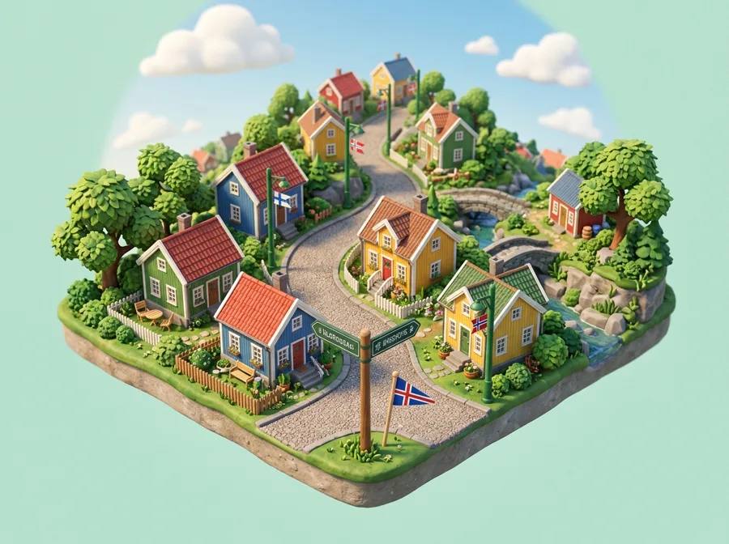
Klasseprosjekt · Kroppsøving
Erobre nabolaget
Lagene erobrer gateskilt i nabolaget og laster opp bevis. Kan spilles av hvem som helst.
ÅpneSkoleressurser fra klasserommet
Spill, store klasseprosjekter og lærerverktøy for barneskolen – laget av en lærer og testet i ekte klasserom.
Klasseromsøkonomi for 1.–7. trinn. Elevene har jobber, tjener mynter, sparer, låner og handler i klassebutikken – og lærer økonomi ved å leve den.

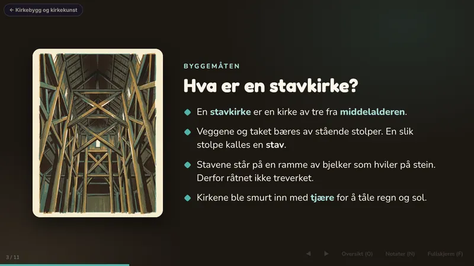
Ekte skjermbilde: en presentasjon om stavkirker, klar for tavla
Alt du trenger til KRLE på ett sted. Seks religioner og livssyn, høytidene, filosofi og de store spørsmålene – med presentasjoner til tavla, oppgaver, lesehistorier, quiz og prøver.
Store prosjekter og spill
Prosjekter som varer i uker, og spill som tar fem minutter.

Lagene erobrer gateskilt i nabolaget og laster opp bevis. Kan spilles av hvem som helst.
Åpne Skreddersydd
SkreddersyddEn egen elevside bygget rundt det eleven elsker – dinosaurer, hester, fotball – med oppgaver laget for akkurat det eleven trenger å øve på.
Les mer 7 reiser
7 reiserJorda rundt, Europa rundt, Norge rundt, tre reiser på engelsk – og en tur gjennom solsystemet.
Se alle reisene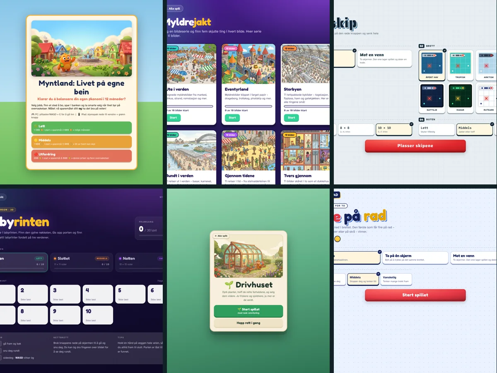
10 spillLivet på egne bein, Pizzabutikken, Slagskip, Fire på rad, Myldrejakt og flere – spill til en ledig stund i klasserommet.
Se alle spilleneReiseprosjektene
Sju reiser med samme opplegg: gruppene får et reisebudsjett, booker transport og overnatting, fører reiselogg og kjemper om flest steder. Gratis og uten elevkontoer.
Reis verden rundt med 200 000 kroner i lomma. Fly mellom land, book hotell og erobre flest av 198 land.
Åpne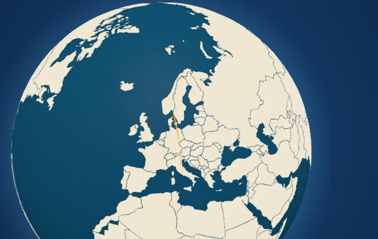
Reis Europa rundt med 100 000 kroner – med fly, tog eller buss. 109 byer i 46 land.
Åpne
Buss, tog, fly eller båt – eller telt med allemannsretten. 72 steder i 15 fylker pluss Svalbard.
Åpne På engelsk
På engelskTravel the USA with 20,000 dollars. 50 states in 7 regions – camping by Leave No Trace.
Åpne På engelsk
På engelskTravel the UK with 8,000 pounds – by train, coach or ferry. 40 places in 12 regions.
Åpne På engelsk
På engelskTravel Australia with 12,000 dollars – from the coast to the red outback. 44 places.
Åpne Rommet
RommetÅr 2247: Mannskapene reiser fra romstasjonen til Pluto i hvert sitt romskip. 37 steder i 8 systemer.
ÅpneSkreddersydd læring
Noen elever trenger mer enn en vanlig oppgavebok. Jeg lager en egen læringsverden bygget rundt det eleven elsker – dinosaurer, roboter, fotball – med oppgaver som treffer akkurat det eleven skal øve på.
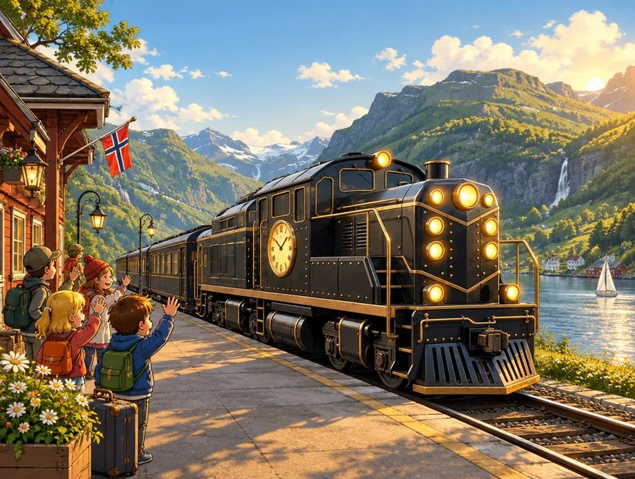
Ekte skjermbilder
Slik ser verktøyene ut når klassen bruker dem – ikke illustrasjoner, men det elevene faktisk får på skjermen.
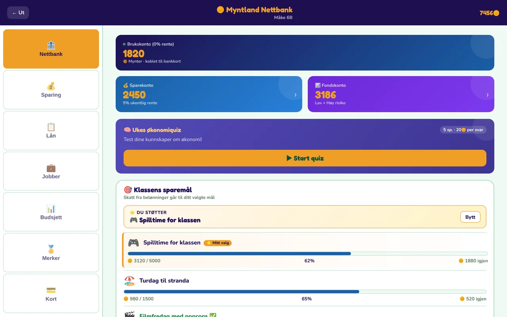

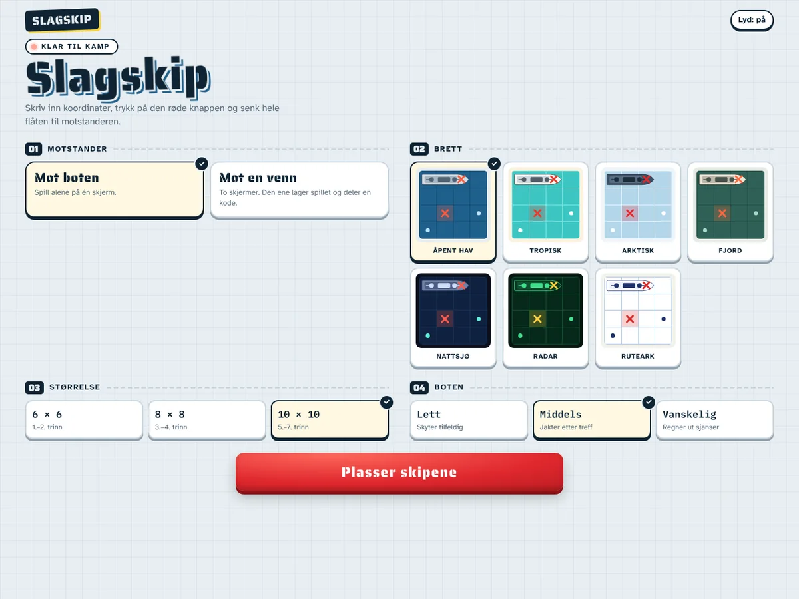
Ærlig talt
Hei! Jeg heter Espen og er lærer på 7. trinn. Jeg lager det jeg selv savner i undervisningen, og jeg bruker KI for å få det til. Det sier jeg like gjerne med en gang.
Elevdata sendes aldri til KI. KI brukes når jeg lager verktøyene – ikke når elevene bruker dem.
Behovene, pedagogikken og oppleggene er mine – bygget på LK20 og det jeg ser i klassen hver dag.
Jeg bruker KI til å programmere og lage illustrasjoner. Det gjør at én lærer kan lage det som før krevde et helt team.
Alt prøves ut i egen klasse før det havner her, og justeres etter hva elevene faktisk gjør.
Jeg holder kurs om hvordan lærere kan lage egne verktøy med KI – uten å kunne koding.
Det meste på Tavleloftet er gratis. Vil du hjelpe til med servere, domener og verktøy, kan du spandere en kaffe.
Hyllene på loftet
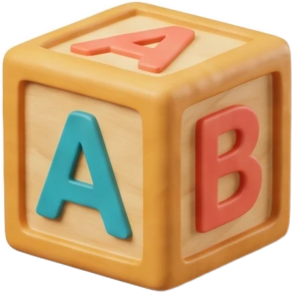
Livet på egne bein, Pizzabutikken, Drivhuset, Slagskip, Fire på rad, Gjett hvem, Ordjakt og flere.
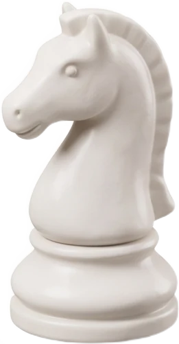
KommerTimeplanlegger, sjakkturnering, relasjonskart for lærerteam, valgfag og arbeidsark-sporing.
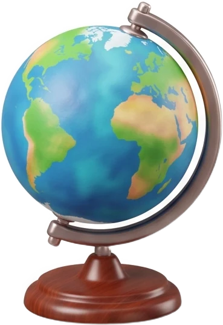
Sju reiseprosjekter og Erobre nabolaget – prosjekter for hele klassen.
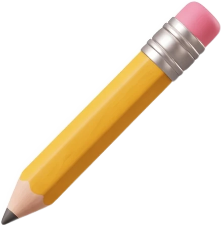
KommerArbeidshefter, årsplaner og planleggere – klare til å skrive ut.